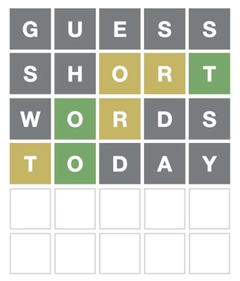
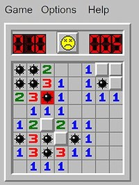
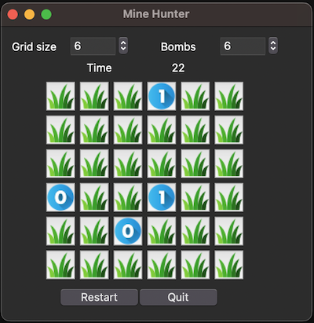

14. Challenges#
14.1. A number guessing game#
14.1.1. Difficulty level: ✲#
Write an application that asks the user to think of a number, and try to guess this number as efficiently as possible.
For instance, program output could be:
Please think of a number between 0 and 10. Press enter when you are ready.
Is the number above 3? [enter y for yes and n for no]
n
Is the number above 1? [enter y for yes and n for no]
y
Is the number 2?
n
The number must be 3!
Think before you start! What would be the most efficient “algorithm” to find the number?
You can upgrade this assignment by making it a GUI application using the Panel library (see the website)
14.2. Anagram maker#
14.2.1. Difficulty level: ✲ to ✲✲#
An anagram is a word or phrase formed by rearranging the letters of a different word or phrase, typically using all the original letters exactly once. For example, the word anagram itself can be rearranged into nag a ram. (source: Wikipedia)
You should ask your user for a word (or word combination or phrase) and also (optionally) how many separate words the anagram may or must comprise. Next, present a list of anagrams. Preferable, these anagrams should be pronouncable by intelligently placing vowels and consonants.
You can upgrade this assignment by making it a GUI application using the Panel library (see the website)
14.3. Finding palindromes#
14.3.1. Difficulty level: ✲ to ✲✲✲✲#
A palindrome is a word, phrase, or sequence that reads the same backwards as forwards, e.g. “madam” or “nurses run”. In biological sequence analysis palindromes are often important protein-binding DNA elements. They are sometimes literal palindromes, as in “GGATTAGG”, or complementary palindromes, where the same sequence is present in the reverse complement strand of the double helix, as in GGAATTCC:
5'-GGAATTCC-3'
3'-CCTTAAGG-5'
Start by writing a single function that determines whether a given input string is a palindrome.
Next, write a function that looks for a palindrome with a minimal length within a given input string, where the rest of the string is not important. Apply this to
Extend this to processing a word list passed through the command-line. There are two such lists to be found in the
datafolder of this repo:dutch_words.txtandenglish_words.txtApply yourself to molecular biology: create a program that looks for palindromes in a given DNA sequence. The sequence below contains at least 2 palindromes of differing lengths. Challenges could be: Find all 6-nucleotide palindromes, or What is the longest palindrome in the human genome?
5'-AGAGGATCCCTCCCATATATGCGGCGATCGCCGCATATCC-3'
You can upgrade this assignment by making it a GUI application using the Panel library (see the website)
14.4. Hangman word guessing game#
14.4.1. Difficulty level: ✲✲#
Hangman is a word-quessing game where one party (in this case the computerprogram you will write) chooses a word that the other party needs to guess. The number of letters in the word is indicated with dashes or underscores.
The guessing party takes turns guessing wich letter will be in the word. If the guessed letter is in the word the dashes are replaced at the correct position(s) with the letter. If the guessed letter is not in the word, a gallow is build piece by piece (one piece for each absent letter). In total, the gallow consists of nine parts, including the hanged. You can choose to visualize progress using another picture of course. The easiest way is using “ASCII art”, as in this example:
HANGMAN = [
'''
+---+
| |
O |
/|\ |
/ \ |
|
=========''']
You can upgrade this assignment by making it a GUI application using the Panel library (see the website)
14.5. Sequence Profiler#
14.5.1. Difficulty level: ✲✲ to ✲✲✲✲#
Given a multiple sequence alignment of DNA sequences, like the ones below:
A T T G C C A T T
A T G G C C A T T
A T C T C A A T T
A T C T T C C T T
A C T G A C C T C
Given such an (ungapped) aligned set of sequences, provided in an input file, it is your task to build a profile using the IUPAC ambiguity codes and report this to the user. In the above example, the profile would look something like this:
A Y B K H M M T Y
Supercharge your challenge: using such a sequence profile, can you implement the functionality to search a sequence (set) for the presence of this, or any other given profile?
You can also upgrade this assignment by making it a GUI application using the Panel library (see the website)
14.6. FastQ analyser#
14.6.1. Difficulty level: ✲✲✲ to ✲✲✲✲#
Below is an example of FastQ sequences, exactly as you would find them in a file generated by a high-throughput sequencer such as Illumina HiSeq:
@HWI-962:64:D0BNFACXX:7:1101:1227:2119 1:N:0:GATCAG
GACATGTTAGATCACTCTTTGGGATGTGTTATCTTGGTGTGTGAAATGAATGTGGGAATTGTTGCACAATTTTTTTTGTTTGAATACTTAATTTGTTGAN
+
CCCFFFFFHHHHHJJJJJJJJJJHIJHHIJIJIJJJJGHDHHIIJIJJFIIJHIIJIJJJJJJEHJJIGIJJJJHDDDDDDDDDDEDDDECEDEDEDB@#
@HWI-962:64:D0BNFACXX:7:1101:1176:2147 1:N:0:GATCAG
CTTTGATGTTGACCGAAAAGATTCAGGAAAGAAGTCTGCCTGAATCTCGAACGAGAAGGACAGTATATCACCTCTATCATTCGATGAGTAATTGGAAAAN
+
CCCFFFFFHHHHHIJJJIJEIIJJGIIIIJJIJGIJIGHIIIJJJHHHIEGGIIGGHJHF@HFFFFEFBCCECEEDDCDDEDEDD@ACACC@DA@CDDD#
This format is described here.
It is your task to read the data in a FastQ file provided by the user, read and process the sequences therein, and report on various quality aspects of the sequences. These can be
number of sequences
length (distribution) of sequences
G/C content
number of ‘N’ nucleotides per position, per sequence
average quality
per-base quality
sliding-window quality
K-mer content
Supercharge your challenge: add a “trimming” and “filtering” option to the app.
You can upgrade this assignment by making it a GUI application using the Panel library (see the website)
14.7. Protein analysis tool#
14.7.1. Difficulty level: ✲✲ to ✲✲✲✲#
Proteins consist of long chains of amino acids called polypeptides. These constituent amino acids define the structure and properties of the protein. Amino acids have several relevant properties:
size
molecular weight
polarity
charge
hydrophobicity
Given a protein sequence file (in Fasta format), read in all sequences within the file and generate
A comma-separated values (csv format) file with for each protein some summary statistics:
name
length (in amino acids)
molecular weight
average hydrophobicity
total charge
the frequencies of the 20 amino acids
For each sequence a separate file where, using a sliding window technique. The name of the protein is the file name plus
.csvas extension. The file has, also in csv format, four columns of data:amino acid position
average hydrophobicity for the current window
average charge for the current window
average polarity for the current window
As a command-line arguments this tool should accept the input multifasta file, the sliding window size (with a default of 8) and an output folder to write all results to (default to same directory as input file).
14.8. Genbank query tool#
14.8.1. Difficulty level: ✲✲✲ to ✲✲✲✲#
Given the GenBank format (assume only one DNA sequence resides in a single file – if there are more, ignore these and report this to the user). Create a parser for files of this type, extracting of all Features only these fields:
Source/organism
CDS/coordinates
CDS/product
CDS/db_xref
CDS/translation
Gene/coordinates
Gene/gene
Sequence
Create an appropriate data model. Create an executable that can be used for these use cases:
GenBankReader.py --helpshows informative help/usage information.GenBankReader.py --infile <INFILE> --summary– Creates a textual summary of the parsed file: length of the sequence, number and types of features. Average lengths of the genes, number on forward strand, number on reverse strand. Maybe you can think of some more interesting features?GenBankReader.py --infile <INFILE> --fetch_gene <GENE NAME (-PATTERN)>– Returns nucleotide sequences of the genes that match the gene name pattern, in Fasta format.GenBankReader.py --infile <INFILE> --fetch_cds <PRODUCT NAME (-PATTERN)>– Returns the amino acid sequences of the CDSs that match the product name pattern, in Fasta format.GenBankReader.py --infile <INFILE> --fetch_features <COORDINATES>Returns all features between the given coordinates.GenBankReader.py --infile <INFILE> --find_sites <DNA SEQ WITH IUPAC CODES>– Lists the locations of all the sites where the DNA pattern is found: position and actual sequence and (if relevant) the element in which it resides.
Genbank files can be downloaded from https://www.ncbi.nlm.nih.gov/datasets/genome/. Simply search something like Bacillus subtilis and click on an entry. You can then choose to download sequences in different formats. Choose “Sequence and Annotation” (gbff format).
14.9. GFF query tool#
14.9.1. Difficulty level: ✲✲✲ to ✲✲✲✲#
Given the GFF3 sequence format (with or without sequences appended in-file; if not appended, a separate sequence file may be provided). Create a parser for files of this type extracting all annotations. Create an appropriate data model. Create an executable that can be used for these use cases:
GffQuery.py --help– shows informative help/usage information.GffQuery.py –infile <INFILE> --summary– Creates a textual summary of the parsed file: length of the sequence, number and types of annotations. Average lengths of the genes, number on forward strand, number on reverse strand. Maybe you can think of some more interesting features?GffQuery.py –infile <INFILE> --fetch_id <ID>– Returns the nucleotide sequence of the element with this ID, in Fasta format.GffQuery.py –infile <INFILE> --fetch_features <FEATURE_TYPE_>– Returns the nucleotide sequence of all the elements of this type, in Fasta format.GffQuery.py –infile <INFILE> --fetch_region <COORDINATES>– Returns all features between the given coordinates, in gff format.GffQuery.py –infile <INFILE> --find_sites <DNA SEQ WITH IUPAC CODES>– Lists the locations of all the sites where the DNA pattern is found: position and actual sequence and (if relevant) the element in which it resides.
GFF files can be downloaded from https://www.ncbi.nlm.nih.gov/datasets/genome/. Simply search something like Bacillus subtilis and click on an entry. You can then choose to download sequences in different formats. Choose “Sequence and Annotation” (gbff format).
14.10. Blackjack (Eenentwintigen)#
14.10.1. Difficulty level: ✲✲ to ✲✲✲✲#
Implement the game Blackjack (Eenentwintigen in Dutch - Wikipedia) where the user can play against your app.
You can just make it a terminal app, or if you like, you can make a user interface using the Panel library (see the website) or any other GUI toolkit, such as TKinter (see here).
14.11. Wordle / Lingo game#
14.11.1. Difficulty level: ✲✲✲ to ✲✲✲✲#
Lingo was one of the longest-running tv game shows. In this game the player needs to guess a word of a fixed length (usually between 5 and 7 letters). It looks for instance like this:

It is you challenge to create such a game.
Configurable (through interface or command-line arguments) should at least be the word length (with default of 5), the language (use a default that suits you) and -optionally- the number of guesses a user can take, with a default of 6.
After a guess, the user receives information about the letters on correct positions, letters at wrong positions, and wrong letters.
There are word lists in the data folder of this repo that you can use to randomly pick words: dutch_words.txt and english_words.txt.
Many ways exist to make this challenge really challenging. For instance, you can create a GUI (there are several libraries for that purpose available in Python but I suggest you use TkInter - see here) or the Panel library (see the website).
14.12. Encryption using Caesar cipher#
14.12.1. Difficulty level: ✲✲ to ✲✲✲#
Caesar’s cipher is one of the simplest and most widely known encryption techniques. Each letter in a text is replaced by a letter some fixed number of positions down (or iup) the alphabet. For example, with a left shift of 3, D would be replaced by A, E would become B, and so on. The method is named after Julius Caesar, who used it in his private correspondence (see Wikipedia).
It is your task to create such a cipher, where the program takes two command-line arguments. The first one is the shift (left being negative) and the second a filename or a literal text.
Using the argparse module is a good idea, but not required.
You can upgrade this assignment by making it a GUI application using the Panel library (see the website)
14.13. Create a data dashboard#
14.13.1. Difficulty level: ✲✲ to ✲✲✲✲#
Create an app that receives a file with structured data (columns) as input. The app then reads this file in a streaming manner and reports statistics of the file contents. The first three of these are mandatory, the subsequent features are optional and increase the level of this challenge.
Dimensions of the dataset (rows/comuns)
Type of data in the columns
Descriptive statistics of each column;
if numeric: a five-number summary plus the mean
if character: the number of unique values and a listing of frequencies of these if the number of unique values is below 10
A pairwise correlation matrix of the numeric columns (if less than 6 or so). For this you will need to use something like numpy, see here
Embed this in a GUI; there are several libraries for that purpose available in Python but I suggest you use the Panel library (see the website). Or, if you prefer some extra supercharged challenge: TkInter, PyQt5 or PySimpleGUI - see here.
Be creative; and impress yourself and your teacher.
14.14. Implement k-Means clustering#
14.14.1. Difficulty level: ✲✲✲✲#
The k-Means clustering algorithm is used much in data science to group data in an unsupervised manner. See Wikipedia for details.
For this assignment you should implement this algorithm in a program that takes two command-line arguments. The first is a file with the input data and the second should be an optional argument for the k-parameter which defaults to 3.
The output should be a file holding a copy of the input data, but with an extra column appended indicating the cluster number in which the example is put. For instance, given this input, a random sample from the famous “Fisher’s iris” dataset:
Sepal.Length Sepal.Width Petal.Length Petal.Width Species
6.2 3.4 5.4 2.3 virginica
6.7 3.1 4.7 1.5 versicolor
5.8 2.7 5.1 1.9 virginica
4.8 3.0 1.4 0.1 setosa
4.8 3.4 1.9 0.2 setosa
6.5 3.0 5.8 2.2 virginica
5.6 3.0 4.5 1.5 versicolor
4.9 3.1 1.5 0.1 setosa
could be clustered (using only the numerical columns!) as follows:
Sepal.Length Sepal.Width Petal.Length Petal.Width Species cluster
6.2 3.4 5.4 2.3 virginica 1
6.7 3.1 4.7 1.5 versicolor 2
5.8 2.7 5.1 1.9 virginica 1
4.8 3.0 1.4 0.1 setosa 3
4.8 3.4 1.9 0.2 setosa 3
6.5 3.0 5.8 2.2 virginica 2
5.6 3.0 4.5 1.5 versicolor 2
4.9 3.1 1.5 0.1 setosa 3
With only one mismatch between the Species and cluster columns.
14.15. Implement neighbor joining clustering#
14.15.1. Difficulty level: ✲✲✲✲#
See Wikipedia for details. You could employ several strategies. The first is classical joining where you end up with a structure with all nodes connected. You can also force the algorithm to stop when a set number of clusters has been formed. This makes it comparable to k-Means but without the random seeding (thus deterministic).
14.16. A puzzle game#
14.16.1. Difficulty level: ✲✲✲ to ✲✲✲✲✲#
Especially older people will probably know the windows Minesweeper game. It looks like this:
{kind=link}
I have programmed a slightly different version of it using Python and a GUI framework called TKinter:
{kind=link}
The app code is in the repo of this book here (in folder gui_demo).
You can download that entire repository as zip archive (button Code).
Study the code, and read or watch some tutorials.
Next, head over to https://www.puzzle-tents.com/ and choose a game you would like to re-create. Implement that game using python and tkinter.
14.17. Create a Game of Life simulation app#
14.17.1. Difficulty level: ✲✲✲✲✲#
The Game of Life or Conway’s Game of Life is a simulation of a simple growth experiment. It follows a few simple rules deciding whether a cell (an element in a 2D grid) will live or die. The challenge here is to visualize the simulation so you will need to work with a Graphical User Interface (GUI) toolkit. There are several libraries for that purpose available in Python but I suggest you use TkInter, PyQt5 or PySimpleGUI - see here.